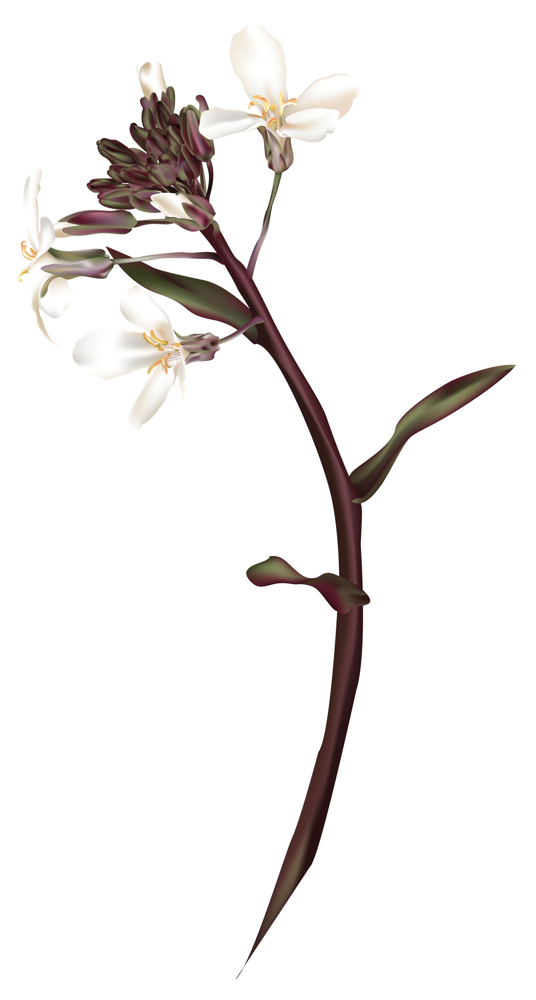
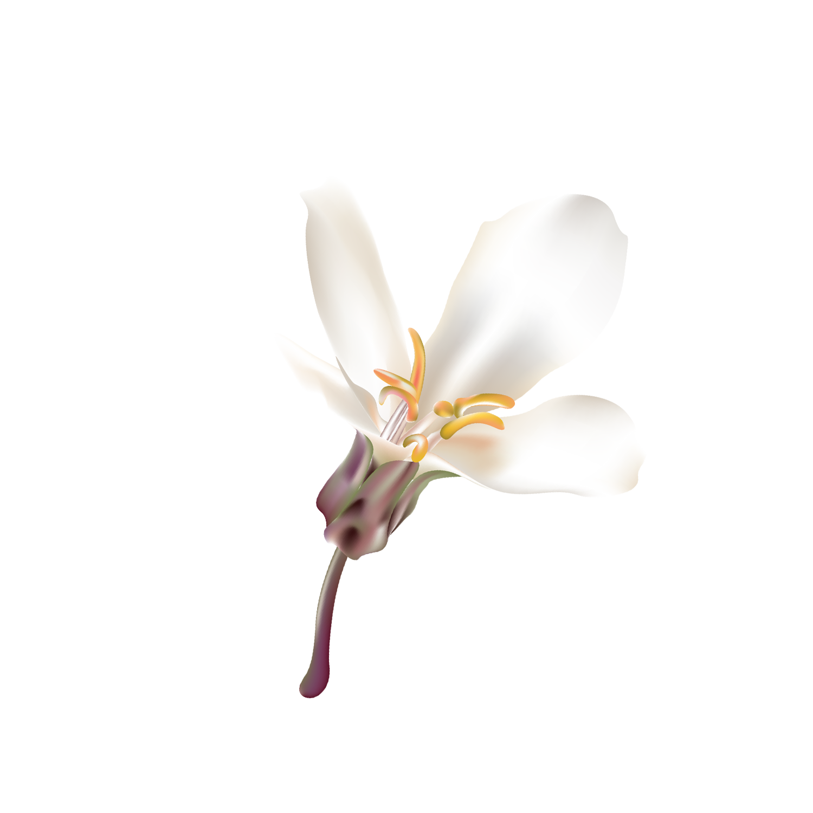

Endemic & Endangered Flora
of Pendataktylos Mountains
Brassica Hilarionis
Delphinium Caseyi
Onosma Caespitosa
Salvia Veneris
Sideritis Cypria
Silenopis Antiphonitis
Teucrium Kyreniae
Brassica Hilarionis Post B. cretica
Lam. var. hilarionis (Post) O.E. Schulz
BRASSICACEAE
Summary: Erect or spreading, stout suffrutescent perennial, 50-80 cm high. Basal leaves usually in rosette, rather fleshy, glaucous, crenate-dentate. Flowers white, in racemes. Fruit a linear silique. Endemic of Cyprus. Restricted to the west part of Pentadaktylos range (7 locations, most in state forest land) from Kornos peak in the west to Giailas in the east, on limestone cliffs (6), at altitude 400-850 m. Threatened by overgrazing (1.1.4.2), potentially by hybridization with cultivated cabbage (8.4) and, due to small population size, by stochastic environmental events and possibly inbreeding depression (9). The inaccessibility of its habitat provides some protection. [EN: B1ab(iii,v)+2ab(iii,v); C2a(i)]

IUCN: Endangered
